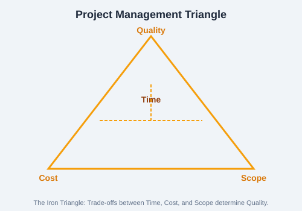

Project management is the application of knowledge, skills, tools, and techniques to project activities to meet project requirements. It involves balancing competing constraints including scope, time, cost, quality, resources, and risk.
The Project Management Triangle
Also known as the Iron Triangle, this model illustrates the trade-off between three primary constraints:
Time — The schedule for completing the project
Cost — The budget available for the project
Scope — The work required to deliver the project
Quality is at the center — if any vertex changes, quality is affected.

Figure: The Iron Triangle — adjusting one constraint inevitably impacts the others.
Basic Skills for Project Managers
Leadership — Inspiring and guiding teams toward goals
Communication — Clear, timely information exchange with stakeholders
Negotiation — Resolving conflicts and reaching agreements
Problem-Solving — Identifying issues and implementing solutions
Time Management — Prioritizing tasks and managing schedules
Risk Management — Identifying and mitigating potential problems
Activity-Based Costing (ABC)
ABC assigns costs to activities based on their consumption of resources, rather than traditional cost allocation. Steps:
Identify activities required to complete the project
Assign resource costs to each activity
Determine cost drivers for each activity
Calculate cost per activity based on driver consumption
Environment Setup
Set up tools before starting a project:
Project Management Software — Microsoft Project, Jira, Asana, Trello
Communication Platforms — Slack, Microsoft Teams, Zoom
Documentation — Confluence, SharePoint, Google Docs
Version Control — Git, GitHub, GitLab for managing project artifacts
Practice Task: Identify a real or hypothetical project (e.g., planning a team event). Define its scope, estimate timeline and budget. Draw the Project Triangle and explain how changing each vertex would affect the others. List three skills you would need as the project manager.